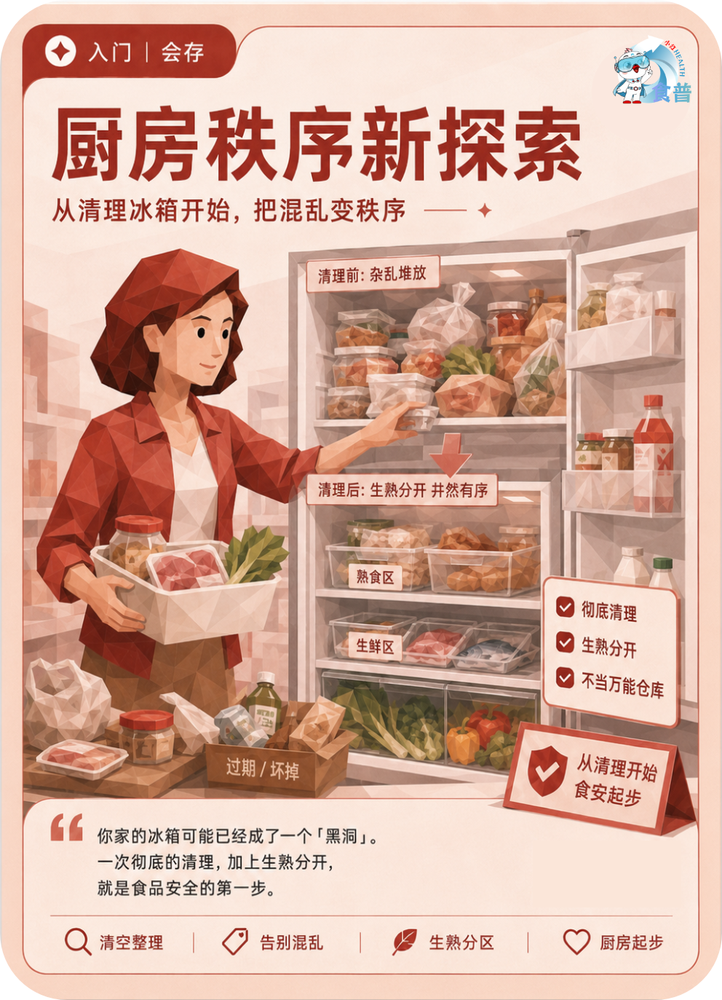

健康主理人
入门
会存
F17
厨房秩序新探索
从清理冰箱开始,把混乱变秩序
你家的冰箱可能已经成了一个「黑洞」。一次彻底的清理,加上生熟分开,就是食品安全的第一步。
手机端可点击“打开原图”后长按图片保存；也可以直接长按上方图卡保存。

从清理冰箱开始,把混乱变秩序
你家的冰箱可能已经成了一个「黑洞」。一次彻底的清理,加上生熟分开,就是食品安全的第一步。
手机端可点击“打开原图”后长按图片保存；也可以直接长按上方图卡保存。